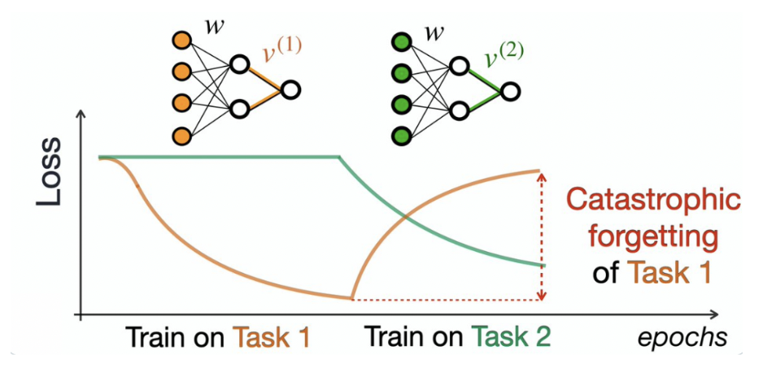

A major challenge in the continual learning setting is catastrophic forgetting, which occurs when training a model on a new task causes a rapid deterioration in its performance on previously learned tasks. We analyze how the combination of different optimizers during pre-training and fine-tuning affects catastrophic forgetting. Instantiating from two variants of Moonlight-16B pre-trained with AdamW and Muon, we investigate how model performance on pre-training tasks evolves when fine-tuning with a different optimizer compared to pre-training, and when fine-tuning with the same optimizer as used in pre-training. We investigate two regimes: (i) in-distribution supervised fine-tuning on English web-text continuation, where the SFT distribution lies inside the pre-training data mix, and (ii) out-of-distribution fine-tuning on autonomous-driving language-action prediction. Within the autonomous driving domain, optimizer mismatch consistently worsens catastrophic forgetting under full fine-tuning; LoRA mitigates forgetting but shows mixed optimizer effects. On encompassed C4 data, validation-loss differences across optimizer pairings are small (≈ 2.39–2.41), suggesting that mismatch may be more harmful when fine-tuning induces a strong domain shift.
Theory: Why Optimizer Choice Affects Forgetting
A key insight from Bernstein et al. is that gradient-based optimizers can be understood as solving the same constrained optimization problem, just over different norms. Given a parameter update, a good optimizer minimizes the loss as much as possible within a restricted step size:
Solving this with a norm constraint — keep Δθ within some budget η — yields different optimizers depending on which norm you choose:
Δθ* = arg min‖Δθ‖ ≤ η 𝓛(θ) + ⟨∇θ𝓛(θ), Δθ⟩
Δθ* = arg min‖Δθ‖ ≤ η ⟨∇θ𝓛(θ), Δθ⟩
The ℓ2-norm recovers gradient descent (and SGD with batches); the ℓ∞-norm recovers sign-GD, which closely resembles Adam when momentum is added. Muon was derived using the RMS→RMS induced norm for matrices.
This has a direct consequence for catastrophic forgetting. When a model is pre-trained with one optimizer, its parameters settle onto a loss surface shaped by that optimizer's norm constraint. Fine-tuning with a different optimizer imposes a different norm, so updates push parameters off that surface — causing a sudden collapse in pre-trained task performance. Recent work has further argued that Adam's implicit regularization minimizes tr(Diag(H1/2)), where H is the Hessian of the model weights, while Muon's geometry differs fundamentally. Our experiments test whether this mismatch measurably worsens forgetting in practice, across both in-distribution and OOD fine-tuning settings.
Methods
We use Moonlight-16B-A3B-Instruct checkpoints from Moonshot pretraining at step 42k: one trained with AdamW and one with Muon. Architecture and pretraining data are otherwise matched, so differences in our fine-tuning experiments are attributable to optimizer pairing rather than model family. Each regime uses a 2×2 design (pretraining optimizer × fine-tuning optimizer), trained with NeMo RL on 8× H100 GPUs in bfloat16 with activation checkpointing.
We evaluate two fine-tuning regimes. The first is in-distribution fine-tuning on C4 web-text continuation, where the model continues a web-text excerpt and we report validation cross-entropy on a held-out split. The second is out-of-distribution fine-tuning on SimLingo autonomous driving language, where the model predicts templated driving action language from scene descriptions — a domain that differs sharply from general web pretraining. For SimLingo, we measure MMLU accuracy before and after fine-tuning to quantify forgetting. For both regimes, we compare full-parameter updates against LoRA (rank 16, α=32) as a forgetting mitigation strategy.
To investigate why optimizer mismatch affects forgetting, we also measure the ℓ∞ and RMS→RMS induced norms of the weight updates across all SimLingo fine-tuning runs. Below we present evaluation results and per-tensor weight change diagrams for the SimLingo experiments.
Per-Tensor Weight-Change Scatter Plots
Each interactive plot below visualizes per-tensor weight changes ‖ΔW‖∞ vs. ‖ΔW‖RMS→RMS for a different optimizer / finetuning setting. Use the dropdown to switch between settings. Hover, zoom, and toggle layers inside the embedded plot to explore.
Full finetuning
Per-tensor weight changes for full finetuning of the base model.
Evaluation Results
Select an evaluation task below to view GRASP's results compared to baseline planners. Each task tests a different aspect of long-horizon planning under a learned world model.
Push-T
Goal-conditioned planar pushing task. A disc must be pushed to align a T-shaped block with a target pose.
Maze2D
A point agent must find a path through a 2D maze to a goal, requiring non-greedy long-range planning.
RoboPush
A robot arm must push an object to a target configuration on a table-top surface.
Point Mass
A canonical continuous-control benchmark: a point mass must reach a goal in a bounded 2D space.
Discussion
Our results separate two axes: optimizer mismatch and distribution shift. On encompassed C4 continuation, validation-loss differences across optimizer pairings are small, so mismatch alone may be insufficient to induce large measurable shifts when the task stays in-distribution. On OOD SimLingo driving language, mismatch correlates with worse MMLU retention under full fine-tuning, and LoRA greatly reduces forgetting.
Limitations. SimLingo experiments use a single seed in the reported tables; C4 uses three seeds. Benchmark contamination is possible for MMLU despite OOD fine-tuning data; we mitigated domain overlap by choosing driving language unlike web pretraining. Hyperparameters were not exhaustively tuned per optimizer pair. Future work should add optimizer transition schedules and test additional OOD domains.
For more details, view our code and paper.
Acknowledgments
We thank course staff and our classmates for their feedback. SimLingo training logs are available at https://wandb.ai/cs194-squad/moonlight-driving-ft. C4 training logs are available at https://wandb.ai/katiewang-university-of-california-berkeley/sft-dev. We also thank NVIDIA for sponsoring our compute, enabling us to be able to carry out these experiments.